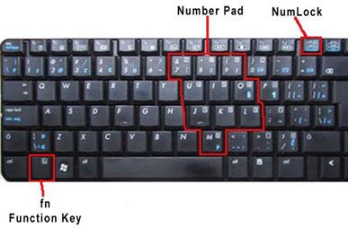
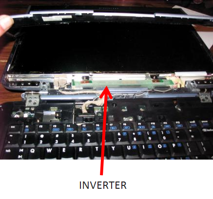

Notebook keyboards have special function keys that do not exist on standard desktop keyboards.
筆記本電腦鍵盤具有標準台式機鍵盤上不存在的特殊功能鍵。
Notice that in the image below, you can see the special blue icons on the keyboard, especially on the arrow keys and function keys.
請注意，在下圖中，您可以在鍵盤上看到特殊的藍色圖標，尤其是在箭頭鍵和功能鍵上。

Special function keys. Image used under CC-BY license from National Information, Security, Geospatial Technologies Consortium.
特殊功能鍵。國家信息，安全，地理空間技術聯盟在CC-BY許可下使用的圖像。
By pressing the FN key in combination with the notebook specific keys (the blue keys in the image above) the user can access features such as increasing or decreasing screen brightness, toggling Wi-Fi and Bluetooth radios on and off, cycling through external monitor connections, adjusting the speaker volume, and other features depending on the specific laptop.
通過同時按下FN鍵和筆記本專用鍵（上圖中的藍色鍵），用戶可以使用以下功能：增加或降低屏幕亮度，打開和關閉Wi-Fi和藍牙無線電，通過外部顯示器連接循環，調整揚聲器的音量以及其他功能，具體取決於特定的筆記本電腦。
Note in the image above that some of the letter and character keys have numbers written on them.
請注意，在上圖中，某些字母和字符鍵上寫有數字。
That is because most laptops do not have room for a dedicated number pad and these keys provide that functionality when pressing the FN and NUM LOCK combination.
這是因為大多數筆記本電腦沒有足夠的空間容納專用數字鍵盤，並且在按下FN和NUM LOCK組合鍵時，這些鍵可提供該功能
If you are typing and notice numbers on the screen instead of letters, it may be the result of accidentally pressing that key sequence.
如果您在屏幕上鍵入並註意數字而不是字母，則可能是由於不小心按下該鍵序列而導致的。
Another special feature of a laptop is the ability to connect an external monitor.
筆記本電腦的另一個特殊功能是可以連接外部顯示器。
Most desktop computers come standard with a single video output, whereas most laptops come with an external video port using HDMI, DisplayPort, DVI, or VGA.
大多數台式機標配單個視頻輸出，而大多數筆記本電腦均帶有使用HDMI，DisplayPort，DVI或VGA的外部視頻端口。
This allows you to duplicate, or extend, the internal display to the monitor to create a single continuous “larger” monitor.
這使您可以將內部顯示複製或擴展到監視器，以創建單個連續的“較大”監視器。
This is also advantageous when connecting a projector to the external port for presentations.
將投影儀連接到外部端口進行演示時，這也是有利的。
Laptop Displays筆記本電腦顯示器
Unlike desktop computers, laptops have a built-in monitor.
與台式計算機不同，筆記本電腦具有內置顯示器。
These displays cannot be upgraded or changed out for a “better model.”
這些顯示器無法升級或更改為“更好的型號”。
So, it is important that users select laptops that have displays they are happy with because it is one of the most important components from the user perspective.
因此，重要的是用戶選擇具有他們滿意的顯示器的筆記本電腦，因為從用戶角度來看，它是最重要的組件之一。
Over the years, manufacturers have used plasma and Light-Emitting Diode (LED) technology for displays, but display technology eventually converged on Liquid Crystal Display (LCD) backlit with LED.
多年來，製造商已將等離子和發光二極管（LED）技術用於顯示器，但是顯示技術最終融合到了具有LED背光的液晶顯示器（LCD）上。
Plasma was one of the first display technologies used for laptops but was discarded in favor of the lighter LED and LCD.
等離子是最早用於筆記本電腦的顯示技術之一，但由於更輕的LED和LCD而被丟棄。有機液晶顯示器（OLED）在移動電話市場中正在擴展，最近開始在筆記本電腦顯示器中變得可行。
Organic Liquid Crystal Display (OLED) is expanding in the mobile telephone market and has recently started to become viable for laptop displays. .
等離子顯示器在1990年代初的筆記本電腦中很受歡迎，當時可接受15至20磅的設備。
Plasma displays were popular in early 1990s laptops when a 15- to 20-pound unit was acceptable.
At that time, plasma only produced a bl ack and white display.
那時，等離子僅產生黑白顯示。
Plasma displays tend to weigh more than either LCD or LED, but offer better contrast ratios.
等離子顯示器的重量往往超過LCD或LED，但對比度更高。
In addition, plasma displays do not require backlighting.
另外，等離子顯示器不需要背光。
While plasma is not used in modern laptop displays (internally), it is used in a large number of televisions, which now can be connected through HDMI or DisplayPort as a secondary monitor.
儘管等離子不在現代筆記本電腦顯示器中（內部使用），但已在大量電視中使用，現在可以通過HDMI或DisplayPort將其連接為輔助顯示器。
The second technology used in laptop displays is the LED display, which is very similar to an LCD display.
筆記本電腦顯示器中使用的第二種技術是LED顯示器，它與LCD顯示器非常相似。
The main difference between LCD and LED display is the type of backlight used.
LCD和LED顯示屏之間的主要區別在於所使用的背光類型。
LED displays use an LED bulb for the backlight, instead of cold compact fluorescent light (CCFL).
LED顯示器使用LED燈泡代替背光冷緊湊型熒光燈（CCFL）。
The reason for this is that LED bulbs use less power than CCFLs, thereby increasing the battery life of the laptop during operations.
原因是LED燈泡比CCFL耗電少，從而延長了筆記本電腦在操作過程中的電池壽命。
LED displays tend to be thinner and initially lost ground in the laptop market to LCD displays with CCFL backlighting.
LED顯示器趨於更薄，最初在筆記本電腦市場上被帶CCFL背光的LCD顯示器所取代。
LCDs utilize an active-matrix display with a transistor for every dot in the screen known as a pixel.
LCD使用有源矩陣顯示器和一個晶體管，用於屏幕中每個點（稱為像素）。
Display technology uses pixel count measurements such as 640 (vertical pixels) x 480 (horizontal pixels); 800 x 600, or 1024 x 768; aspect ratios such as 4:3, 16:9, or 16:10; and lines of horizontal resolution such as 480p, 702i, and 1080p to name a few.
顯示技術使用像素計數測量，例如640（垂直像素）×480（水平像素）；800 x 600或1024 x 768；長寬比，例如4：3、16：9或16:10；以及水平分辨率的線條，例如480p，702i和1080p等。
Displays are measured diagonally, so a 17” laptop is the viewable area measured from corner to corner.
顯示屏是對角線測量的，因此17英寸筆記本電腦是從一個角落到另一個角落的可見區域。
Current LCD display resolution can range from a tablet or a 2-in-1, which might be 1366 x 768, to Ultrabook with 1920 x 1080 full HD, or business class and gaming rigs that can provide Ultra HD resolutions with a still higher pixel count.
當前的LCD顯示分辨率範圍從平板電腦或2合1（可能是1366 x 768）到具有1920 x 1080全高清的Ultrabook，或者可以提供更高像素的超高清分辨率的商務和遊戲設備計數。
In a standard display with a resolution of 1920 x 1080, there are more than one million transistors used to provide the image on the screen.
在分辨率為1920 x 1080的標準顯示器中，有超過一百萬個晶體管用於在屏幕上提供圖像。
Originally, LCDs used a CCFL backlight to illuminate the transistors and provide the image on the screen.
最初，LCD使用CCFL背光來照亮晶體管並在屏幕上提供圖像。
If the backlight fails, the laptop will not display an image and the CCFL will need to be replaced.
如果背光燈失效，則筆記本電腦將不會顯示圖像，並且需要更換CCFL。
This is not very common, though, because CCFL bulbs usually last for 50,000 hours of usage.
但是，這不是很常見，因為CCFL燈泡通常可持續使用50,000小時。
Laptops run on direct current (DC) power from the battery or the power adapter.
筆記本電腦依靠電池或電源適配器的直流（DC）電源運行。
LCD CCFL laptop displays, though, require alternating current (AC) to power their backlights.
但是，LCD CCFL筆記本電腦顯示器需要交流電（AC）為背光燈供電。
The inverter in a laptop performs this conversion function from low-voltage DC to high-voltage AC.
筆記本電腦中的逆變器執行從低壓DC到高壓AC的轉換功能。
If the inverter fails, which was a common problem, a technician is required to replace this part.
如果逆變器出現故障（這是常見問題），則需要技術人員更換該部件。
Luckily, these inverters are not too costly and can be replaced by a technician without too much difficulty.
幸運的是，這些逆變器並不太昂貴，可以很容易地由技術人員更換。
In the image below, you can see the typical location of a laptop’s inverter in the bevel of the laptop display.
在下圖中，您可以在筆記本電腦顯示屏的斜角中看到筆記本電腦逆變器的典型位置。

Inverter on a laptop. Photo used under CC-BY-NC-ND license from chriggy1.
筆記本電腦上的逆變器。chriggy1在CC-BY-NC-ND許可下使用的 照片。
Although using the CCFL provides a higher quality and more consistent image, laptop manufacturers for the most part have achieved similar quality with HD resolutions using an LED backlit LCD display.
儘管使用CCFL可以提供更高的質量和更一致的圖像，但是筆記本電腦製造商在大多數情況下已經通過使用LED背光LCD顯示屏獲得了高清分辨率的相似質量。
Effectively lighter and less power consuming, this is the current trend for most laptops on the market.
有效地減輕重量和減少功耗，這是市場上大多數筆記本電腦的當前趨勢。
With the continuing development of HD, QHD, and UHD resolutions in the television display market, laptop manufacturers are incorporating these features into higher end gaming and professional media systems.
隨著電視顯示市場中HD，QHD和UHD分辨率的不斷發展，筆記本電腦製造商正在將這些功能集成到高端遊戲和專業媒體系統中。
The table below is indicative of some common resolutions by native resolution and corresponding standard:
下表通過原始分辨率和相應的標準指示了一些常見的分辨率：
|
Source: Russell Burchill
|
|
Pixel RatioNative Resolution
|
Aspect Ratio
|
Standard &Resolution
|
|
640×480
|
4:3
|
VGA
|
|
1280x 720
|
16:9
|
WXGA (720p equivalent)
|
|
1366×786
|
16:9
|
HD
|
|
1680×1050
|
8:5
|
WSXGA
|
|
1920×1080
|
16:9
|
FHD (1080p equivalent)
|
|
1920×1200
|
16:10
|
WUXGA
|
|
2560x 1440
|
16:9
|
QHD
|
|
2560x 1600
|
16:10
|
WQXGA
|
|
3840x 2160
|
16:9
|
4K UHD
|
|
|
像素比率原生分辨率
|
長寬比
|
標準與分辨率
|
|
640×480
|
4：3
|
顯卡
|
|
1280x 720
|
16：9
|
WXGA（等效720p）
|
|
1366×786
|
16：9
|
高畫質
|
|
1680×1050
|
8：5
|
WSXGA
|
|
1920×1080
|
16：9
|
FHD（相當於1080p）
|
|
1920×1200
|
16:10
|
武俠
|
|
2560x 1440
|
16：9
|
QHD
|
|
2560x 1600
|
16:10
|
WQXGA
|
|
3840x 2160
|
16：9
|
4K超高清
|
|
Source: Russell Burchill
資料來源：羅素·伯吉爾（Russell Burchill）
Every LCD and LED display is built with a native resolution.
每個LCD和LED顯示屏均具有本機分辨率。
This means that every display has an optimal display quality that can be achieved only when the signal input matches the native resolution.
這意味著只有在信號輸入與原始分辨率匹配時，才能實現每個顯示器的最佳顯示質量。
If the laptop display has a native resolution of 1920 x 1080 (1080p), then every other resolution that the laptop display uses is either scaled up (stretched) or scaled down (shrunk).
如果便攜式計算機顯示器的原始分辨率為1920 x 1080（1080p），則便攜式計算機顯示器使用的所有其他分辨率將按比例放大（拉伸）或按比例縮小（縮小）。
This affects the display of all the elements on the laptops including video, images, and desktop elements.
這會影響筆記本電腦上所有元素的顯示，包括視頻，圖像和桌面元素。
When choosing a laptop, ensuring the display meets your needs is important.
選擇筆記本電腦時，確保顯示屏滿足您的需求非常重要。
The two types of LCDs available are Twisted Nematic (TN) and In-Plane Switching (IPS).
可用的兩種LCD類型為扭曲向列（TN）和平面內切換（IPS）。
The type of LCD controls the viewing angle, ghosting, response time, and native resolution.
LCD的類型控制視角，重像，響應時間和原始分辨率。
Generally, a manufacture offers one or the other in a product line, so knowing your usage patterns helps to inform decisions when purchasing a laptop.
通常，製造商在產品線中提供一個或另一個，因此了解您的使用方式有助於在購買筆記本電腦時做出決定。
Replacing a laptop display requires the technician to order the precise replacement type from either the manufacturer or a third-party seller as the replacement must match the original.
更換筆記本電腦顯示器時，技術人員必須從製造商或第三方銷售商處訂購準確的更換類型，因為更換的物品必須與原始物品匹配。
TN LCDs have a tendency to be less expensive and have faster response times than IPS LCDs.
TN LCD具有比IPS LCD更便宜，響應時間更快的趨勢。
They also have a smaller viewing angle than IPS LCDs so they work well for the laptop environment where the user is typically located directly in front of the machine.
與IPS LCD相比，它們的視角也更小，因此它們可以很好地在通常用戶直接位於機器正面的筆記本電腦環境中使用。
The viewing angle is a measure of the amount of the display that can be seen adequately at a certain degree from the center of the screen.
視角是可以從屏幕中心以一定程度充分看到的顯示量的度量。
A wide viewing angle may be a privacy concern for some, while it could be considered a benefit by others.
對於某些人來說，寬視角可能是一個隱私問題，而對於其他人則可以考慮。
Many laptops now boast a viewing angle of up to 170 degrees, providing maximum flexibility in their displays.
現在，許多筆記本電腦擁有高達170度的可視角度，在其顯示屏中提供了最大的靈活性。
TN LCDs also have a faster response time, which is how fast the pixels move from state to state (black to white or grey to grey).
TN LCD的響應時間也更快，這就是像素從狀態到狀態（黑色到白色或灰色到灰色）移動的速度。
Response times are measured in milliseconds (ms) with TN coming in between 1-2ms and IPS between 3-5ms.
響應時間以毫秒（ms）為單位，TN在1-2ms之間，IPS在3-5ms之間。
The color variations are tied to the input and output commands as translated to the display.
顏色變化與翻譯成顯示器的輸入和輸出命令有關。
For uses such as gaming and video editing, TN is generally preferred over IPS.
對於諸如游戲和視頻編輯之類的用途，TN通常比IPS更可取。
In spite of the advantage between cost and response times, manufacturers will often use IPS in business class machines and higher end gaming laptops because of better color reproduction and viewing angle.
儘管成本和響應時間之間有優勢，但製造商仍會在商務級機器和高端遊戲筆記本電腦中使用IPS，因為它們具有更好的色彩還原和視角。
An IPS display combined with a higher quality graphics card can make up for slightly slower response times.
IPS顯示器與更高質量的圖形卡相結合可以彌補響應速度稍慢的問題。
Other considerations in choosing a display are contrast ratio–the measure of the difference between the lightest and darkest portions of the display–and brightness, which is the overall measure of lightness or darkness.
選擇顯示器時，還需要考慮其他因素，例如對比度（顯示器最亮和最暗部分之間的差異的量度）和亮度（即明暗程度的整體量度）。
The last option for laptop displays is the newest technology–organic LED (OLED)–which uses organic compounds between electrodes to emit light instead of an LCD or LED bulb.
筆記本電腦顯示器的最後一個選擇是最新技術-有機LED（OLED），該技術在電極之間使用有機化合物發光而不是LCD或LED燈泡。
These are still not widely used in the laptop market but as the technology becomes more common in the cellular telephone market, it is driving changes in the laptop market.
這些技術尚未在筆記本電腦市場中得到廣泛使用，但是隨著該技術在蜂窩電話市場中變得越來越普遍，它推動了筆記本電腦市場的變化。
OLED provides a superb color depth and much better contrast ratio than traditional LCD/LED displays but their cost is still prohibitive in modern laptops.
與傳統的LCD / LED顯示器相比，OLED提供了出色的色彩深度和更好的對比度，但在現代筆記本電腦中，其成本仍然高昂。
As of early 2016, four manufacturers have slated a spring release of OLED laptops.
截至2016年初，四家製造商已計劃在春季發布OLED筆記本電腦。
The last item for consideration is completely unrelated to the display itself but is a function of the display being the tallest element on the laptop.
最後要考慮的項目與顯示器本身完全無關，但取決於顯示器是筆記本電腦中最高的元素。
Due to this fact the WLAN antennae are routed up onto the top of the display under the bezel.
由於這個事實，WLAN天線被路由到邊框下方顯示器的頂部。
Care must be taken when repairing displays and removing the bezel so as to not harm the antennae.
修理顯示器和卸下擋板時必須小心，以免損壞天線。
This is especially important since the incorporation of Wireless-n NIC cards in laptops.
這是非常重要的，因為在筆記本電腦中集成了Wireless-n NIC卡。
Installing and Configuring Laptop Hardware 安裝和配置筆記本電腦硬件 <<
Previous Next >> HW2作業二